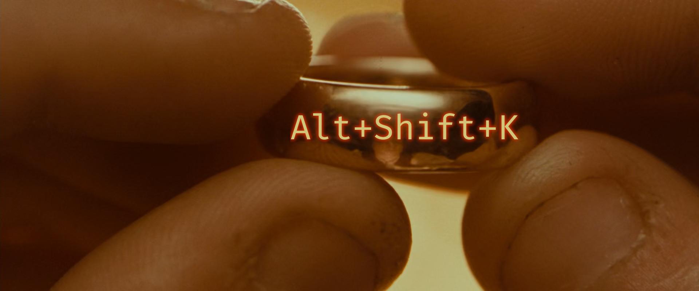

Some tips on how to get the most out of RStudio.
I don’t like the default look of RStudio:

(Right click > Open image in new tab to see fine details)
On several occasions when showing people something on my computer, they’ve remarked that they liked the various tweaks I’ve made to the look. So I thought I would write those down so that I can refer people to this when needed and refresh my memory next time I’m setting up a new computer. The end result looks more like this:

For reference, you can download RStudio from the Posit website. Sometimes Posit makes interesting posts about updates to the RStudio IDE on their blog to show off new features.
Pane layout
- Top left: Source
- Top right: Console
- Bottom left: History (minimize this for maximum source space)
- Bottom right: everything else that I commonly use (Environment, Files, Plots, Packages, Help, VCS, Viewer)
The first two changes make the Ctrl+1 & Ctrl+2 keyboard shortcuts align with the position of the panes as well.
Font
There are many good programming fonts out there, but my favorite is Fira Code. I particularly like the ligatures, especially the one that changes the base R pipe from separate | and > characters into a clean triangle (see second screenshot above).
Options
On the menu bar, navigate to Tools > Global Options. This is a list of changes I make to the defaults:
- General
- Uncheck Basic > Workspace > Restore .RData into workspace at startup
- Relying on saved workspaces generally bad practice. Save things explicitly.
- Uncheck Basic > Other > “Send automated crash reports to RStudio”
- Set “Save workspace to .RData on exit” to “Never”
- Graphics > Graphics Device > Backend / Antialiasing
- On some OS’s it can sometimes be helpful to change the backend to AGG or alter the antialiasing setting to revent blurriness in the Plots panel when using display scaling on a high esolution monitor. The defaults work perfectly on my 2160p monitor on Linux Mint / PopOS.
- Advanced > Other > Check “Show .Last.value in environment listing”
- If you ever evaluate a long-running expression, then curse because you forgot to assign the result to something, you can still access it with this special variable (but only if you don’t run any other expressions afterwards!).
- Uncheck Basic > Workspace > Restore .RData into workspace at startup
- Code
- Check “Use native pipe operator”
- I usually disable Snippets > Enable code snippets
- Display > Syntax > Check “Use rainbow parentheses” (see screenshot above)
- Saving > General > Check “Ensure that source files end with newline”
- Experiment with Display > Indentation guides > Gray lines
- Appearance
- Editor font: “Fira Code”
- Editor theme: “Idle Fingers” (this is the One True Theme)
- Pane Layout: see above
- R Markdown
- Basic > R Markdown > “Show output preview in:” Set to “None”
- Basic > R Markdown > Uncheck Show output inline for all R Markdown documents
- Basic > R Markdown > “Show equation and image previews:” Set to “Never”
- I’m just now noticing a citations section that one can seemingly point to a Zotero library. This seems promising, I should look into how that works. One of my goals in life is to never use EndNote again.
- Basic > R Markdown > “Show output preview in:” Set to “None”
- Accessibility
- General > Other > Check “Reduce user interface animations”
- General > Other > Check “Highlight focused panel”
- (That’s the dotted line around the Console panel in the second screenshot.)
Keyboard shortcuts
I think one of the best ways for new people to start feeling more comfortable programming in R is to get the RStudio keyboard shortcuts into your muscle memory. When you’re trying to learn the academic part of statistics, you don’t want to be simultaneously dealing with the physical annoyance of having having to constantly move the mouse around. Keep your hands on the keyboard as much as possible.
This is the one keyboard shortcut to rule them all:

Alt+Shift+K on superior operating systems, Option+Shift+K on MacOS. This brings up the quick reference list of all shortcuts. Glance over them, pick out one or two that seem the most useful, and be mindful about using them in your next few sessions. Once they become second nature, pick another. Don’t worry about memorizing them all. There’s a ton and many aren’t very useful. Some of my favorites:
Ctrl+Enter: Run current selection / lineCtrl+1andCtrl+2: move the cursor to Source or Console panes, respectively (see above tip on pane layout).Ctrl+A,Ctrl+C,Ctrl+V: select all, copy, pasteCtrl+TabandCtrl+Shift+Tab: cycle back and forth through source tabs.- Also works in Firefox!
You can set custom shortcuts (or modify the existing set) by navigating to Tools > Modify Keyboard Shortcuts. I set Insert Chunk to Ctrl+Alt+U (Ctrl+Alt+I is bound to xrandr-invert-colors on my systems) and Ctrl+Shift+- to my Quarto image paste script.